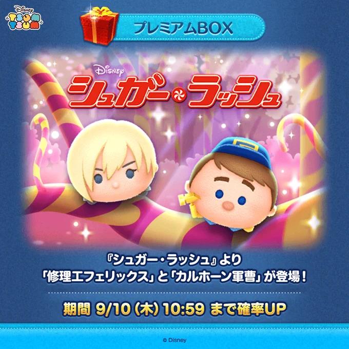
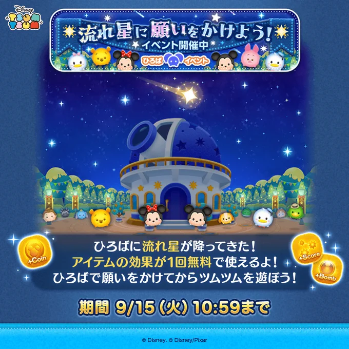
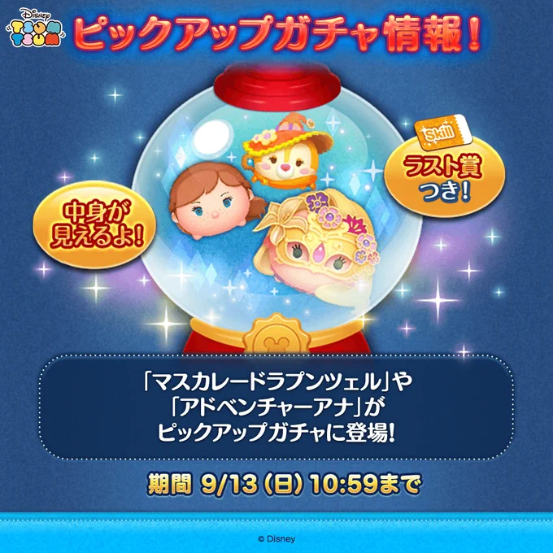
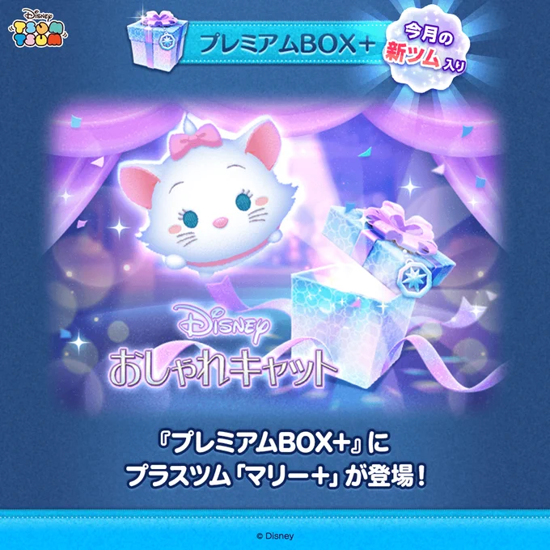

9月の新ツム・イベント・ガチャまとめ
『シュガー・ラッシュ』の新ツム4体を中心に、開催中のイベントと終了したガチャを分けて整理しました。今から確認すべき内容が先に分かる構成です。

9月13日時点で先に確認すること
期限が最も近いのは、アイテムの効果を1回無料で使える「流れ星に願いをかけよう！」です。新ツムの初回確率アップ、セレクトBOX、ピックアップガチャは終了しているため、過去の期限と混同しないよう下で分けています。
9月の発表・開催一覧
| 日付 | 内容 | 9月13日時点 |
|---|---|---|
| 9月1日 | プリンセスヴァネロペ、マイヒーローラルフ登場 | 登場期間中 |
| 9月3日 | 「すべてのゲームをクリアしよう！」開始 | 開催中 |
| 9月4日 | セレクトBOX全12種 | 終了 |
| 9月7日 | 修理工フェリックス、カルホーン軍曹登場 | 登場期間中 |
| 9月8日 | サマーツムツムくじ2026の当選番号発表 | ゲーム内で確認 |
| 9月10日 | ピックアップガチャ全15体、ファンフェスタ報酬配布 | ガチャは終了 |
| 9月11日 | ひろば「流れ星に願いをかけよう！」開始 | 開催中 |
| 9月13日 | プレミアムBOX＋にマリー＋追加 | 新着 |
シュガー・ラッシュ新ツム4体とマリー＋
第1弾：プリンセスヴァネロペ、マイヒーローラルフ
どちらもボイス付きの期間限定ツムで、登場期間は9月30日23:59までです。プリンセスヴァネロペは特別なヴァネロペをつなぐとライン消去、マイヒーローラルフは縦と横のライン状にツムを消すスキルです。
第2弾：修理工フェリックス、カルホーン軍曹
9月7日に追加され、登場期間は9月30日23:59までです。修理工フェリックスは縦ライン状に2種類のツムを出すスキル、カルホーン軍曹は照準のタイミングに合わせて周囲を消すスキルです。

通常イベント「すべてのゲームをクリアしよう！」
開催期間は9月3日11:00から9月30日23:59まで。ミッションを進め、クリアしたゲーム数に応じてピンズを獲得できます。スキルチケットなどの報酬も用意され、9月の新ツムにはキャラクターボーナスが付きます。
新ツムを使うと進めやすくなりますが、ガチャに使うコインとイベント報酬の価値は別に考えるのが安全です。手持ちで達成できるミッションは既存ツムで進め、条件が厳しい場面だけボーナス対象を使うとコインを残しやすくなります。
ひろば「流れ星に願いをかけよう！」
9月15日10:59まで。ひろばで流れ星に願いをかけると、アイテムの効果を1回無料で使えます。参加には最新アプリへのアップデートが必要です。
無料分は、普段よりアイテム代がかかるプレイやイベントの難しいミッションに合わせると無駄がありません。願いをかけてからプレイする順番を忘れないようにしてください。

ガチャとプレミアムBOX＋の更新
9月10日のピックアップガチャ
マスカレードラプンツェル、アドベンチャーアナ、曲付きの魔法使いクラリスなど全15体。ラスト賞はスキルチケットで、9月13日10:59に終了しました。

9月13日：マリー＋追加
プレミアムBOX＋にマリー＋が追加されました。少しの間マリーがボムに変わるスキルで、ワッペン効果は大きいマイツムが降ってきやすくなるものです。9月イベントのキャラクターボーナス対象です。

終了したセレクトBOX
9月4日から7日まで、曲付きの勇者ミニー、星の女神ブルー・フェアリー、キャベツミッキー〈チャーム〉など全12種が登場しました。現在は終了しているため、今から回せるガチャとしては扱いません。
今からのおすすめ確認順
- 9月15日10:59までのひろば無料アイテムを受け取る。
- 通常イベントの残りミッションと報酬を確認する。
- 新ツムを引く場合は、月末までに残すコインを先に決める。
- 当サイトの記録ツールで、手持ち主力の1分効率を確認する。
- 開催日時に変更がないか、プレイ直前にゲーム内お知らせを見る。
確認元と掲載方針
2026年9月13日時点のLINE GAME公式ブログ、ツムツム公式X、公式YouTube、ゲーム内お知らせを確認しました。画像は内容を把握するために必要な公式告知だけを掲載し、出典へ直接移動できるようにしています。9月14日以降の発表は、確認後にこの記事へ追記します。